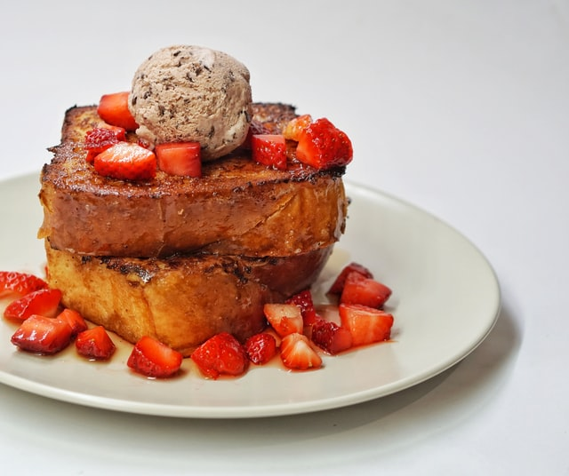

French Toast

Description
This simple recipe makes 4 servings of delicious French
toast.
Ingredients
- 2 large eggs
- 1 cup of milk
- a pinch of salt
- 1 tbsp. sugar, honey or syrup
- 1 tsp. vanilla extract
- 1 tsp. ground cinnamon
- 8 slices of sandwich bread (e.g. Brioche)
Steps
- In a bowl, whisk together eggs, milk, salt, sugar, vanilla
and cinnamon.
- Melt butter in a large skillet. Place bread slices in
skillet and cook on medium heat until golden brown. Flip
and cook the other side.
- Serve immediately or keep warm in oven (up to 30 minutes).